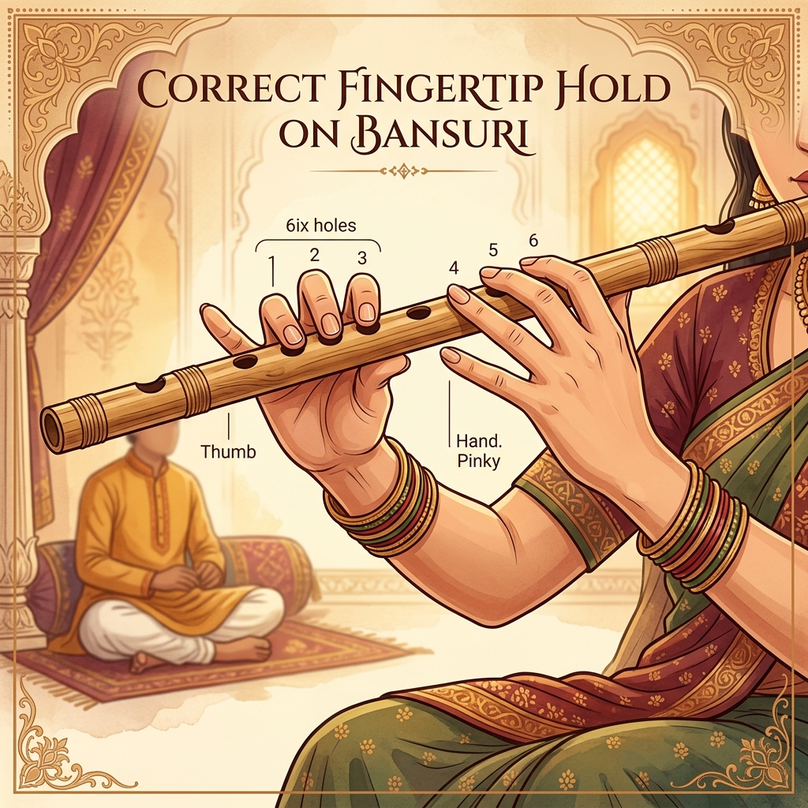

Use the pads of your fingers, not the tips. The left hand covers the top three holes, while the right hand covers the bottom three. Keep your wrists relaxed.
Rest the blowing hole against your lower lip. Shape your lips as if saying "pooh" and blow a steady, focused stream of air across the opposite edge of the hole.
Click on a Swara to see its finger position on the Bansuri.
All three top holes closed. The fundamental note.
Patterns to develop finger dexterity and breath control.
Aroha: S R G M P D N S'
Avaroha: S' N D P M G R S
Aroha: SS RR GG MM PP DD NN S'S'
Avaroha: S'S' NN DD PP MM GG RR SS
Aroha: SRG RGM GMP MPD PDN DNS'
Avaroha: S'ND NDP DPM PMG MGR GRS